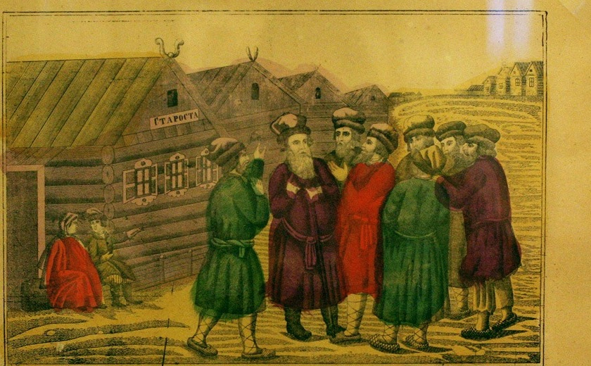
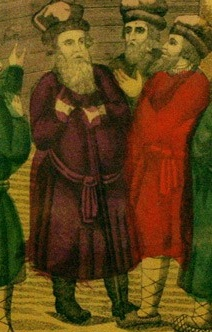
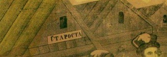
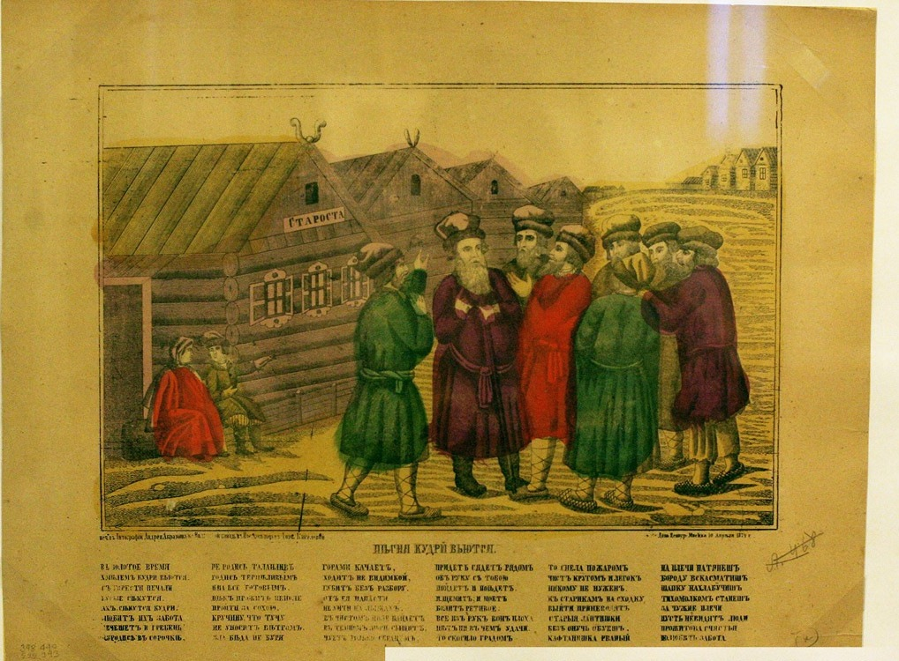

7 января
Портрет, шарж или карикатура?
Три жанра на одном лице: портрет показывает, кто перед нами, шарж — как его узнают, карикатура — что о нём думать.

Власть на карикатуре читается без имён: высота, размер и место в центре выдают начальника быстрее подписи.
Перед тобой лист 1874 года. Подписи мы пока убрали — остались только фигуры, дом и поле. Ткни в того, кто, по-твоему, здесь распоряжается. Музей не скажет «правильно» или «неправильно»: он покажет, из чего сложился твой ответ.
Пока никто не выбран. Три секунды — этого хватает, чтобы решить.
Улики открываются по одной. Каждая — то, что действительно видно на листе, а не догадка о человеке. Открой все пять и посмотри, какие из них переживут один сдвиг.
Доска — самая прямая улика: она называет должность словом. Уберём её и посмотрим, устоит ли вывод.
На листе 1874 года власть читается без имён. Староста выше соседей и стоит в первом ряду группы; он в кафтане, подпоясанном кушаком, и в сапогах, тогда как остальные — в лаптях. Сход идёт у его дома, и на доске над окном написано «СТАРОСТА»; у порога сидят домочадцы. Часть крестьян повёрнута к нему, а сам он стоит со скрещёнными руками и не жестикулирует. Подпись на листе — песня «Кудри вьются» — о сходе и о старосте не говорит ничего. Значит, должность показывает не текст, а отношение фигур к дому, к росту и друг к другу; убрать доску — и вывод станет слабее, но не исчезнет.
Под каждой лубочной картинкой печатали текст — и зритель читал картинку вместе с ним. На этом листе текст есть: внизу шесть столбцов стихов. Только это песня «Кудри вьются» — про волосы, а не про должности.



Что здесь доказано, а что нет. Композиция листа подтверждает отношение: перед нами сход, и одна фигура выделена ростом, одеждой и местом у своего дома. Имя, чин и губерния из картинки не выводятся — их даёт только музейная карточка. Искать в листе конкретное историческое лицо нельзя: перед нами обобщённая сцена деревенского схода.
Разметка: проверено по листу — рост, одежда, обувь, доска «СТАРОСТА», столбцы песни. Описано в источнике — толкование сцены как схода у дома старосты (аннотация собрания РГБ). Наша гипотеза — что зритель без подписи уверенно называет старосту: это предположение музея, а не факт.
Три вопроса без подвоха. Проверь, что осталось в голове после дела.
Дата — номер музейного выпуска, а не годовщина события. Открыты шесть выпусков; остальные страницы появятся по мере сборки.
Нажми на открытый день, чтобы перейти к расследованию.
Здесь разделены сам исторический предмет, музейная карточка и цифровой файл, показанный на странице.
| Что на странице | Предмет | Карточка и источник | Права |
|---|---|---|---|
| Обложка и третья карточка | Лубочная картинка «Кудри вьются» (сцена сельского схода) | Литография А. Абрамова, Москва, 1874. Цветная литография, раскраска от руки. 22,3 × 34 см (изображение), 35,8 × 43,8 см (лист). Собрание РГБ, отдел изоизданий; аннотация о сходе у дома старосты — по этикетке собрания | Общественное достояние: автор неизвестен, лист 1874 года. Цифровой файл — Wikimedia Commons, отметка PD-Art, источник указан как olden.rsl.ru (Российская государственная библиотека) |
| Карточка «Староста» | Фрагмент того же листа | Крупный план фигуры старосты: кафтан с кушаком, сапоги вместо лаптей | Фрагмент листа, общественное достояние. Вырезка сделана редакцией музея, изображение не дорисовывалось |
| Карточка «Дом с доской» | Фрагмент того же листа | Доска с надписью «СТАРОСТА» над окном дома | Фрагмент листа, общественное достояние. Вырезка сделана редакцией музея |
| Аудиогид | Текст редакции музея | Написан по этому же листу и аннотации собрания РГБ | Текст музея. Голос синтезирован, звук сгенерирован для этого выпуска |
Файлы на странице — репродукции одного и того же листа. Ни одна деталь не дописана: вырезки только приближают то, что на листе уже есть. Датировка, техника, размеры и место хранения взяты из описания листа в собрании РГБ.
Три жанра на одном лице: портрет показывает, кто перед нами, шарж — как его узнают, карикатура — что о нём думать.
Шесть открытых выпусков января и порядок сборки остальных.
К календарю →